This module is derived from content in chapters 11-13 of The Selenium GuidebookJavaScript Edition By Dave Haeffner._ _This module guides you through creating a separate spec_helper file where the root level beforeEach()andafterEach() hooks will live for each test, as well as a _Driver Factory _which creates the build() and quit() functions used for each instance of a test. Users will work through creating a config file to store the environment variables for where (in which environment) your test is run on, and modify the DriverFactory to check & pull environment variables from config. Last but not least, add in some features to make your tests results easier to read and debug using the Sauce Labs platform
Objectives
- Analyze and plan test suites, learning how to balance the size and maintainability (ability to check failed tests) against the amount of features you want to test, as well as the level of abstraction you want to use to make modular objects to use in your test suite
- Learn about the different categories and types of tests. Understand which types of functional tests one uses Selenium for and how the different types and categories of tests are related
- Learn about Root Level Hooks that handle the universal methods
beforeEach()andafterEach()that all tests use, and that you can separate the common functionality that all test use with these methods in a separate file (such asspec_helper.js) to be used with each test. - Understand how to create a file that configures a test environment, and how it is used with a Driver Factory from a file such as
spec_helper.jsto create a template that each test is built off of. - Identify and fix problems in test suites such as poor locators, silent failures, and too much functionality in a single class
- Choose and separate imperative language into separate objects and pages, and use the simplified commands created in that class with other tests to write code that is easier to read, maintain, and declarative in nature
- Create a_ Driver Factory _that creates all of the
build()andquit()functionality each test uses - Create a
spec_helper.jsfile that uses the Driver Factory and works to set up each test, allowing tests to use the _Driver Factory _and a config file that specifies where and on which environment tests are run - Set up a
baseURLvariable inconfig.jsthat points to the app you are running tests on in the BasePage, and remove hard-coded URLs from other page objects, allowing you to specify just a sub-domain from page objects - Update your Sauce Labs credentials on your machine, then add functionality in your config file, using the sauce object in
config.js, to run your tests on Sauce Labs with the Driver Factory.
In testing, both automated and manual, there are several different types of tests. Not all types of tests are mutually exclusive. For example, when doing regression testing, you may use unit tests, and unit tests can be used as a piece for an integration test.
Functional vs Non-Functional Tests
These two types of tests are ways to categorize tests by what they are testing. Functional tests check to see if a feature is or is not working, nothing more (e.g. did I log in or not log in?). Non-functional testing typically gives a value or amount that helps engineering and product teams do performance testing and understand and predict whether the software and features will work as expected, at scale. An example would be load testing, to see if the test runs as expected with many simultaneous users or volume testing. Sauce Labs does front-end
(DDOS attack GIF on imgur: https://imgur.com/Ksjm2D3)
Selenium is most used for functional testing Types of functional tests include unit testing, UI testing, regression testing, integration testing, and more.
Unit Tests
Unit tests are the smallest, simplest possible type of a test you can do. They test one single action on one single page/ application, and nothing more. Often these tests are written and executed on your local machine to validate that each ‘piece' of a more complex test works.
The typical structure for a unit test is
- Set up the test data. (Given "x" condition".)
- Call the class you are testing (When "y" behavior happens.)
- Assert that the expected results are returned. (Then "z" expected change is returned.)
Integration Tests (Service Tests)
Much of the time, when you write test code, it's not just one application you are testing, but many. As an example, if you were to sign up for Netflix, you would have to sign up on their website, send and receive information from their user management software (store user information to a database), as well as send and receive information from the software that processes their payments. Integration tests if and how these different services function together as a whole.
Many times integration tests can be formed from groups of unit tests. You can think of an integration as combining API tests with unit and UI tests to test how the entire service works.
UI Tests
A UI Test is a test of the visual interface a human user would interact with. Selenium is very well suited to these kinds of tasks. You can test the layout and behavior of a test easily, as well as track the usability of user flows. Many times the UI test can give insight into how well a test is functioning. As an example, if you see an ‘error message' in the UI when you log in, you can tell that something went wrong when trying to submit the username and password for authentication.
Regression Tests
A specific set of tests that verify that the changes being made (features) don't break your application. Integration is more of a methodology than a specific way to write a test. These tests can include unit and integration tests, but the difference here is this set of tests is created with the purpose of checking to make sure a change doesn't break the application.
End-to-End Tests
Similar to system testing,can include just follow a users' workflow in a visual interface, or include everything that occurs in an application environment, doing a situation that mimics real-world use. This includes actions such as interacting with a database, using network communications, or interacting with other hardware, applications, or systems if appropriate along a specific user flow.
Black Box vs. White Box Testing
White Box testing is a type of testing you do when you can see and understand all of the inner workings of an application and it's source code. Black Box testing is testing that is done from the end-user perspective, without any knowledge of the internal structure of application code. A good example of this is testing a workflow on the user interface of a web application. It is reasonable to assume for a login test, that if you put the correct username and password, click submit, then get access to the platform that the code for making this happen on the back end is also working.
Headless Testing
This type of testing refers to a code-based approach to testing web applications. When a human user is manually testing an application, they are looking at the visual browser interface with items you can see, click, and interact with. Headless testing is done by a robot that doesn't use the visual component of a browser, and instead does all interactions through communication with the codebase and other services that make up an application. Sauce Labs also provides headless user testing .
Now that we have some tests and page objects, we'll want to start thinking about how to structure our test code to be more flexible. Ensuring that our code is reusable, and can scale to as many tests as we need requires some additional elements & abstractions.
Part 1: Global Setup & Teardown
We'll start by using a separate class for Selenium setup and teardown out of our tests, placing the file in a central directory.
We'll create three things.
- A class that will contain the creation and destruction of our Selenium instances (known as a Driver Factory)
- A helper that all tests will pull from to do the basic things each test should do such as
build()andquit() - Change a configuration in
package.jsonto set the automatic timeout for a longer duration.
Create a new directory called lib. In the libdirectory we'll create a new file called DriverFactory.js, and in the test directory we'll create a file called spec_helper.js.
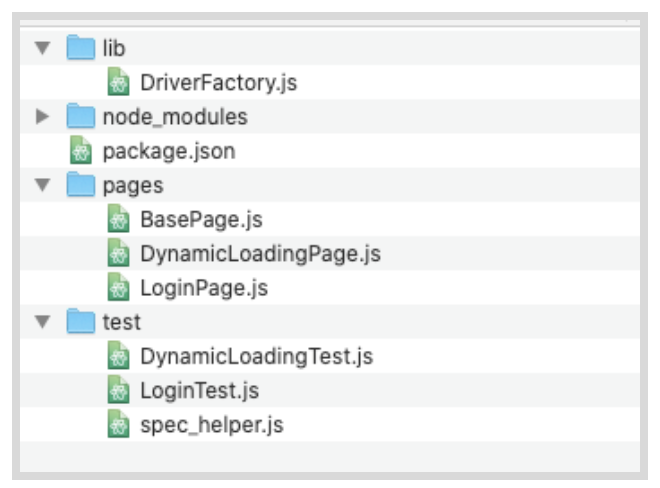
NOTE
If you want to use terminal to set this up, simply type (from your project directory):
mkdir lib
cd lib
touch DriverFactory.js
cd ..
cd test
Touch spec_helper.js
–
Open DriverFactory.js in your IDE and paste in the following:
// filename: lib/DriverFactory.js
// const path = require('path')
const { Builder } = require('selenium-webdriver')
class DriverFactory {
async build() {
//process.env.PATH += path.delimiter + path.join(__dirname, '..',
'vendor')
this.driver = await new Builder().forBrowser('firefox').build()
}
async quit() {
await this.driver.quit()
}
}
module.exports = DriverFactory
After adding our requisite libraries, we declare a class along with two methods; build(), and quit().build() is responsible for spinning up an instance of Selenium each time it is called by a test or page class, and quit is responsible for closing out that Selenium instance once the class has finished it's interactions or tests.
The class ends with module.exports, so that other classes can call and use the methods defined here.
Next, open the spc_helper.js file in the test folder and paste in the following:
// filename: test/spec_helper.js
const DriverFactory = require('../lib/DriverFactory')
const driverFactory = new DriverFactory()
beforeEach(async function() {
await driverFactory.build()
this.driver = driverFactory.driver
})
afterEach(async function() {
await driverFactory.quit()
})
Finally, update your package.json file. This allows you to change settings for mocha, in this case setting the default timeout to 30 seconds. This way a test will be given 30 seconds to run, then will quit (timeout).
After the last object, add a comma at the end of the curly braces, and put this inside of the final closing curly braces.
// filename: package.json
//...
},
"mocha":{
"timeout": 30000
}
}
NOTE
Including the quit()function is extremely important for the speed & passability of your tests. Without the quit method, the test will keep running even once all other methods have been executed until the default timeout has expired. This will not only slow down your ability to run many parallel tests at once, it will also send timeout error messages that could abort the test build. Configuring timeouts appropriately in the package.json file is important to ensure that all tests run correctly the first time and are returning valuable feedback.
–
Root Level Hooks
In Mocha, when you specify before and after hooks outside of a test class they are used globally for all tests. These are referred to as root-level hooks. Every test that you write will use the BeforeEach() and AfterEach()methods to perform the same set of actions to set up and tear down the test, so it makes sense to store these in one place so we can make changes in one place, instead of within each and every test.
At the top of spec_helper.js we require DriverFactory and create a new instance of it, storing it in a variable.
In beforeEach() we create a driver instance and store it in a variable on this. (which will make it accessible when we use it).
In afterEach()we call the quit method in the Driver Factory to destroy the Selenium instance.
Since we now have the build() method, and driver from beforeEach() in spec_helper.js, and everything we need from the afterEach() method also defined, we can pare down the code in our test classes.
First at the top of both LoginTest.jsandDynamicLoadingTest.js, add at the very top:
// filename: test/LoginTest.js & filename test/DynamicLoadingTest.js
require('./spec_helper')
...
Then, from each test (DynamicLoadingTest.js andLoginTest.js)** delete or comment out** the following:
The {Builder}for Selenium Webdriver for both:
// filename: test/LoginTest.js & // filename: LoginTest.js
//...
//const { Builder } = require('selenium-webdriver')
The driver instantiation in LoginPage.jswithin the beforeEach() method:
//let driver
The driver creation timeoutas part of the describe function:
//this.timeout(30000)
ThevendorDirectory variable and the driver instantiation inside the BeforeEach() method in:
// filename: test/DynamicLoadingTest.js
...
//const vendorDirectory =
// path.delimiter + path.join(__dirname, '..', 'vendor')
// process.env.PATH += vendorDirectory
//driver = await new Builder().forBrowser('firefox').build()
// filename: test/LoginTest.js
// ...
//driver = await new Builder().forBrowser('firefox').build()
The entire afterEach() method as everything you need was created in DriverFactory.js.
// afterEach(async function() {
// await driver.quit()
// })
Finally, update the login and dynamicLoading variables on your test pages in the beforeEach()function using the this.method to inherit from the accompanying page object.
// filename: test/LoginTest.js
//...
beforeEach(async function() {
login = new LoginPage(this.driver)
await login.load()
})
// ...
// filename: test/DynamicLoadingTest.js
//...
beforeEach(async function() {
dynamicLoading = new DynamicLoadingPage(this.driver)
})
//...
See the complete source code here. Note that you have to run npm install in the root project folder before being able to use code pulled down from a repository.
Final Code
The two test classes should now look like this:

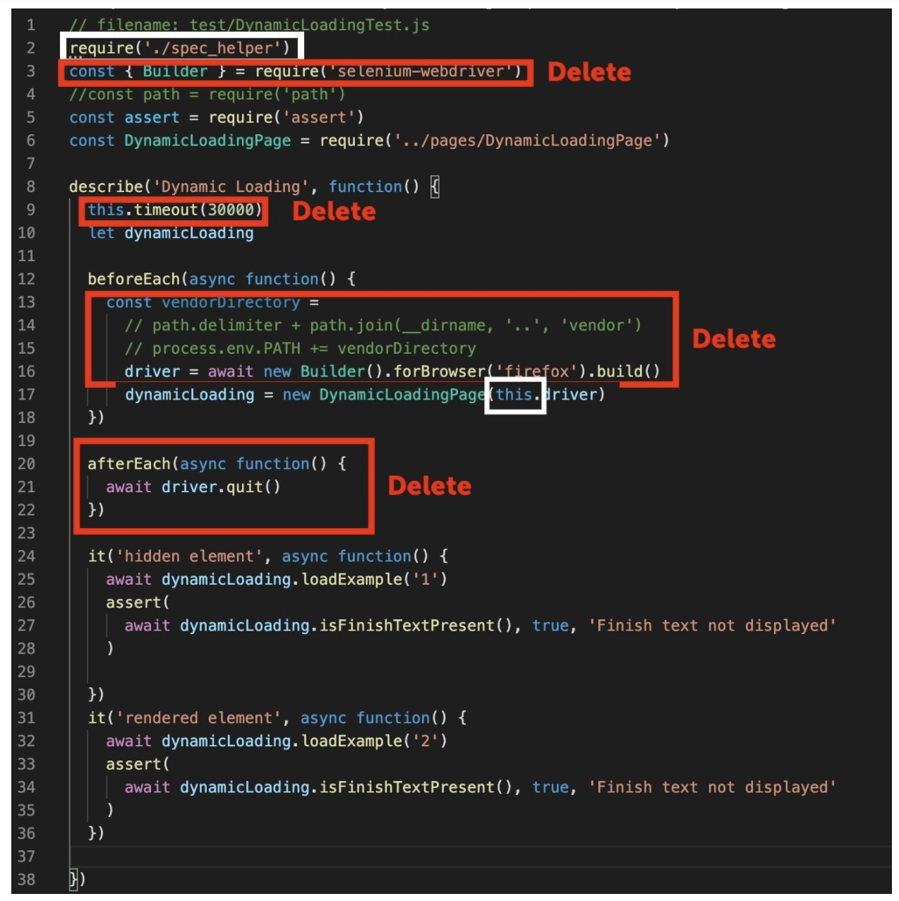
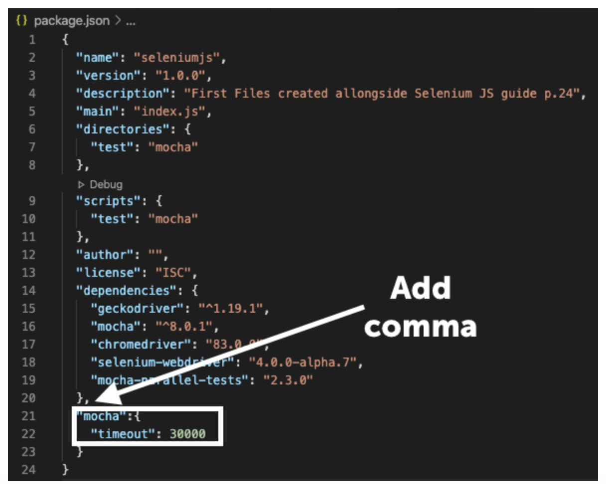
Review- Abstraction and Non-Duplication
Thus far we have prepared our test suite well to be reusable. When you have things like the setup and teardown used for all tests in one place, making changes to this becomes a lot easier. Not duplicating (re-writing the same) code and abstracting into files like the driver factory, spec helper, and base page mean that you won't have to re-write that code each time you write a new page or test object, or go make changes to all those files when you need to modify something.
Video
Watch the video 4.04 Non-Duplication an excerpt from Sauce Labs' Tech Talk by Nikolay Advolodkin
Creating a Config File
The config file is an important part of any test suite. This file will specify things for your tests like what web address you test uses to perform the test, what browser it uses, and later on, will store methods for logging into the Sauce Labs grid, as well as instructions as to which environment you should run your tests in.
The whole point of setting up a test suite is that you can run your tests against different environments (e.g., localhost, test, staging, production, etc.).
So let's make it so you can specify a different base URL for our tests at runtime.
First, create a file called config.js in the lib directory. You can use these commands from the project directory in your terminal:
cd lib
touch config.js
Your file directory should look like this:

Create a baseURL
Next, what we will do is create a separate file for setting the browser that your test will run in, and store it in a variable called baseURL.
Open config.js with your IDE and paste in the following:
// filename: lib/config.js
module.exports = {
baseUrl: process.env.BASE_URL || 'http://the-internet.herokuapp.com'
};
Next, find thevisit() function in the BasePageclass. You will delete what is in there (await this.driver.get(url)) and add in the following:
// filename: pages/BasePage.js
//...
async function visit(url) {
if (url.startsWith('http')) {
await this.driver.get(url)
} else {
await this.driver.get(config.baseUrl + url)
}
}
This looks for the ‘http' characters to detect if a valid URL for a website can be passed in (one can reasonably assume all web addresses start with that. Otherwise, the base URL will be the one we are writing these tests for, which you just entered in config.js, ‘http://the-internet.herokuapp.com'.
Remove URLs from Page Objects
In order to use our new config file, add in the following at the top of your base page, it will apply to all other page objects:
// filename: pages/BasePage.js
const config = require('../lib/config.js')
//...
Now you need to go into the page objects (BasePage.js and DynamicLoadingPage.js) and take out the hard-coded URL inside the visit()method. Instead we will only have the sub-pages that will append on to the baseURL from the-internet heroku app.
// filename: pages/LoginPage.js
// ...
async load() {
await this.visit('/login')
// ...
// filename: pages/DynamicLoadingPage.js
// ...
await this.visit('/dynamic_loading/' + exampleNumber)
// ...
Now when running our tests, we can specify a different base URL in config.js by providing some extra information at run-time, setting the variable BASE_URL=url mocha. Now we're in a better position now with our setup and teardown abstracted into a central location.
Now we can easily extend our test framework to run our tests on other browsers.
Final Code
Your new code should look like this:
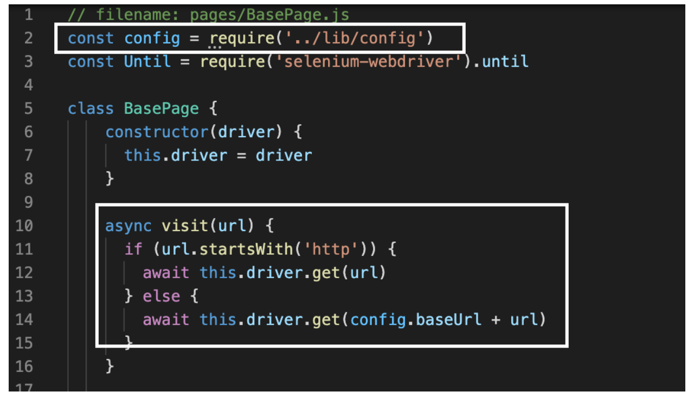
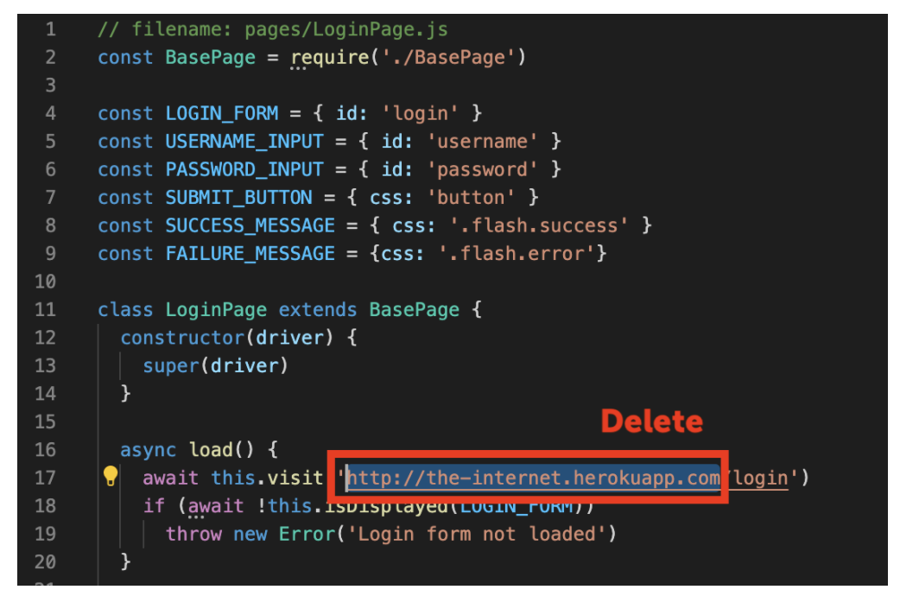

Running Different Browsers Locally
WebDriver works with each of the major browsers through a browser driver which is (ideally but not always) maintained by the browser manufacturer. It is an executable file (consider it a thin layer) that acts as a bridge between Selenium and the browser.
By using npm with the package.json file, the updated version will be fetched for you without manual install and setting of the PATH variable. If you don't use npm, you need to manually install each driver and update the path
Running Tests in Different Browsers
The first thing we will do is set the browser with the BROWSERvariable inside module.exports in lib/Config.js for the browser, that will be passed into DriverFactory.js (which is in turn used in spec_helper and your test objects such as Logintest.js). Make sure there is a comma after theBASE_URLvariable declaration.
// filename: lib/config.js
module.exports = {
baseUrl: process.env.BASE_URL || 'http://the-internet.herokuapp.com',
browser: process.env.BROWSER || 'firefox',
}
Go into spec_helper.js and require the config file, then pass it into DriverFactory.js each time a new driverFactoryinstance is created.
// filename: test/spec_helper.js
const DriverFactory = require('../lib/DriverFactory')
const config = require('../lib/config.js')
const driverFactory = new DriverFactory(config)
Now, go into DriverFactory.js. We are going to use the config variable passed into DriverFactory each time a new instance is created. We will create aconstructor to construct a new config instance for the test. Next, update the build() method so that the browser isn't hard coded in, and can take the variable from config.js.
// filename: lib/DriverFactory.js
//...
class DriverFactory {
constructor(config) {
this.config = config
}
async build() {
//process.env.PATH += path.delimiter + path.join(__dirname, '..', 'vendor')
this.driver = await new Builder().forBrowser(this.config.browser).build()
}
//...
Run your code with npm test, and you should see your tests working when you enter either ‘chrome' or ‘firefox in config.js. Complete course code can be found here.
Final Code
The new code should look like this: 
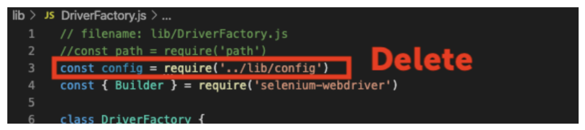


Quiz
In this lesson you are going to learn how to move the test suite that you have written from your local machine onto the Sauce Labs cloud provider. They maintain a set of real and virtual devices, as well as a Selenium grid that you can use to run your test in almost any environment. There are many reasons this is advantageous:
- You can use virtual machines (without having to set it up on your own machine)
- To test older versions of operating systems
- Test browsers that only run on older operating systems.
- You don't have to provision all the different kinds of virtual machines you will need yourself.
- You don't have to set up and maintain the Selenium Grid that will coordinate the test across all of these different machines.
Update Config
We are going to use the config.js file that you used earlier to set up the browser and baseURL. Inside module.exports, underneath the browser, add in the following:
// filename: lib/config.js
module.exports = {
//...
host: process.env.HOST || "saucelabs",
sauce: {
username: process.env.SAUCE_USERNAME,
accessKey: process.env.SAUCE_ACCESS_KEY,
browserName: process.env.BROWSER_NAME || 'internet explorer',
browserVersion: process.env.BROWSER_VERSION || "11.0",
platformName: process.env.PLATFORM_NAME || "Windows 7",
}
Notice the new variables you have added:
hostenables us to specify whether our tests run locally or on Sauce Labs. The others are stored under a key sauce key to make their use explicit.- The
sauceobject contains the information for each specific test. We assume you may pass in unique usernames and access keysusernameis the username you have created for Sauce LabsaccessKeyis generated (and can be regenerated) in your user settingsbrowserNamespecifies the browser for a test.browserVersionspecifies which version of the browser for a testplatformNamespecifies the operating system for a test.
Setting up your Sauce Labs Account
You'll need an account to use Sauce Labs. Their free trial offers enough to get you started. And if you're signing up because you want to test an open source project, then be sure to check out their Open Sauce account.
Visit http://app.saucelabs.com/. You can create a free trial account if you haven't been assigned one.

Go to Account > User Settings to find your username and access key.
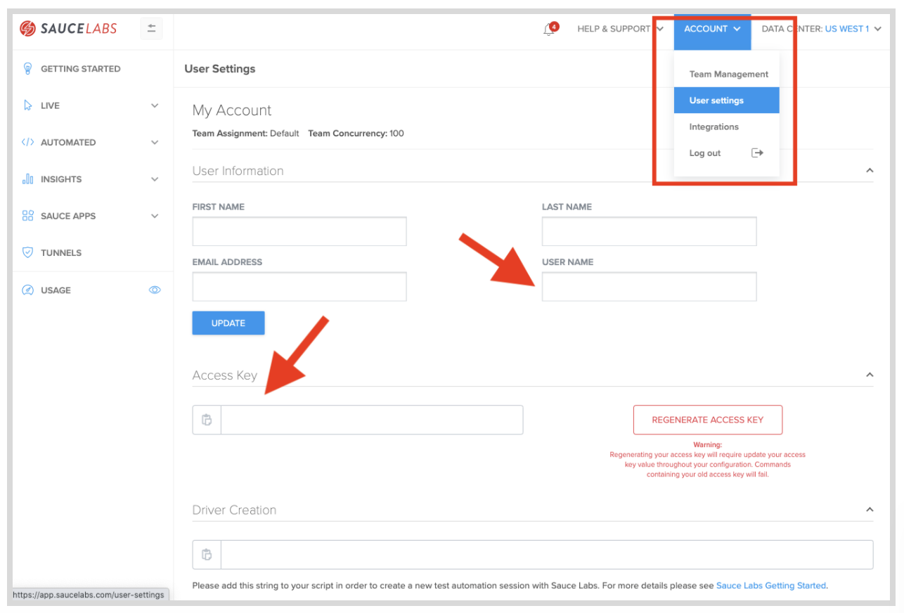
You will need to set up your username and access key on your machine's environment variables either in your bash profile (Mac/Linux) or in the system properties (Windows).
To learn more about setting up environment variables, you can see the article here.
Video
Watch This Video to See how to set up your Sauce Credentials as environment variables on MacOS 4.05 Sauce Credentials
Set a Source for Sauce Credentials
If you get a failing test such as this, Sauce Labs doesn't know to look at the updated SAUCE_USERNAME and SAUCE_ACCESS_KEY that you put in your .bash_profile. (First make sure npm is correctly installed as well)

You can tell your machine (Mac only) to look for the correct credentials and type in your terminal:
source ~/.bash_profile
Now, when you run a program it will have the updated username and access key. !IMPORTANT you need to do this with any new project file you create, and also any time you update your bash profile.
Update DriverFactory
Now we can update DriverFactory.js to work with these new values and connect to Sauce Labs.
// filename: lib/DriverFactory.js
// ...
class DriverFactory {
constructor(config) {
this.config = config
}
_configure() {
let builder = new Builder()
switch (this.config.host) {
case 'saucelabs':
const url = 'https://ondemand.saucelabs.com/wd/hub'
builder.usingServer(url)
builder.withCapabilities(this.config.sauce)
break
case 'localhost':
// process.env.PATH +=
// path.delimiter + path.join(__dirname, '..', 'vendor')
builder.forBrowser(this.config.browser)
break
}
return builder
}
// ...
Inside of DriverFactory we will also change the build method to use the new private method _configure.
// filename: lib/DriverFactory.js
//...
async build() {
this.driver = await this._configure().build()
}
// ...
We create a method to configure the builder object for Selenium, _configure(), wrapping everything in a conditional check against config.host. If it's set to 'saucelabs' then we specify the url for their on-demand end-point and pass in the capabilities that we want (e.g., everything specified under sauce in config.js). If config.host is set to 'localhost' then we handle browser execution just like before (adding the path to the vendor directory to the execution path and launching a browser locally).
NOTE
In JavaScript, functions or methods prefixed with a _ are intended to be private. This means that the_config() function can only be used inside of the DriverFactory {} class. In this case it is only used by build(), and can't be used once the DriverFactory {}instance has finished running.
–
Update Timeout
Now that you are running tests on the Sauce Labs platform, you may notice that they are taking longer. We will go in and update the timeout in the package.json file to 60000 (60 seconds) from 30000 so each of your tests has a minute to run before they are timed out.
// filename: package.json
"mocha": {
"timeout": 60000
}
// ...
Now when you run npm test, you should see a confirmation that your test ran. It should have taken longer than it did on your local machine. Remember to set the source ~/.bash_profile for your project folder if you have made any changes.
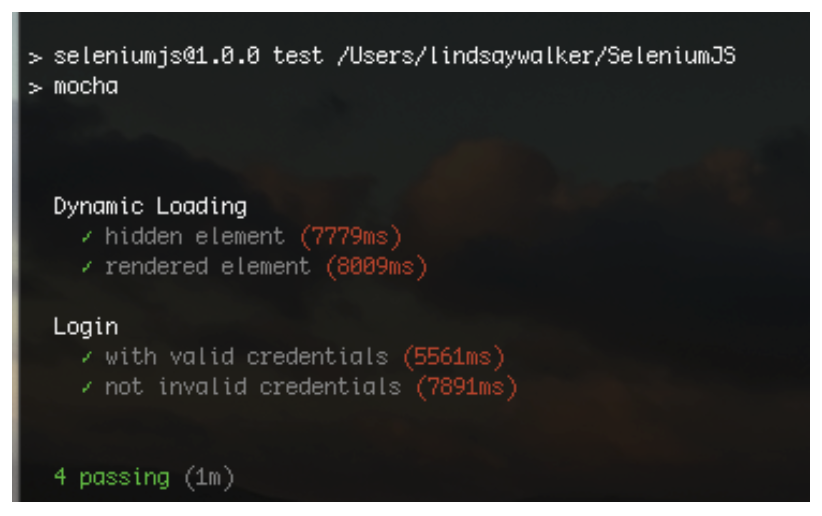
You should also visit http://app.saucelabs.com/. Go to the left hand menu and choose Automated → Test Results. There you will see your tests with icons indicating they were run on the operating system & browser that you chose:

NOTE
What did we do? At this point to create an instance of a test, you are dependent on several different objects in your test suite. The config.js file and DriverFactory.js are pulled in each time by spec_helper.js. When one of your tests is run (LoginTest or DynamicLoadingTest) they use spec_helper to help build that test, which in turn instantiates DriverFactory for each test.
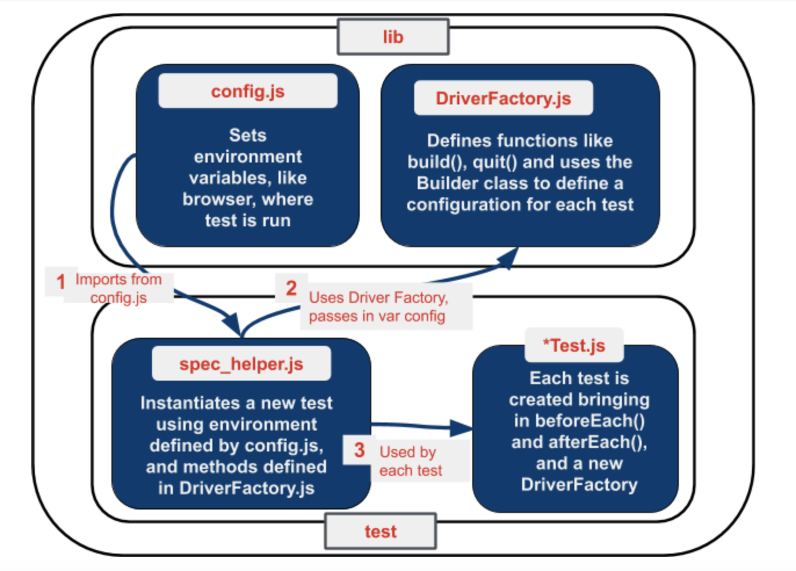
–
Complete course code can be found here.
Final Code
Your final code will look like this:
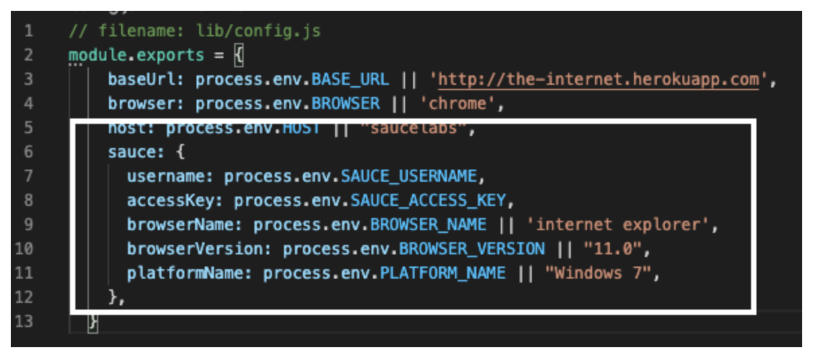
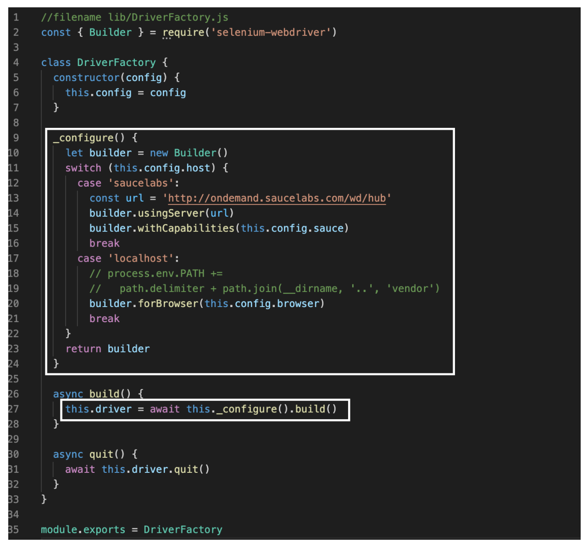
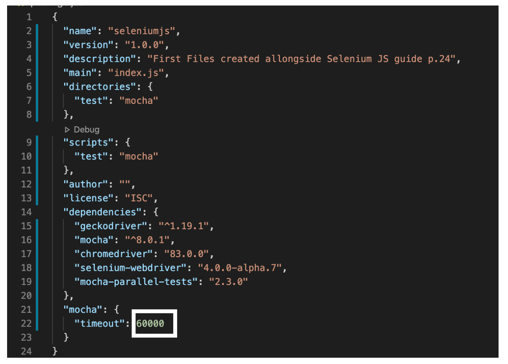
In this lesson you will add in some elements for better reporting to understand the status of test run on the Sauce Labs automated web testing platform.
Now that your tests are up and running on the Sauce Labs platform, you'll notice it's hard to tell one apart from the other. The tests you should have run will show up as Unnamed job with a hash identifier- not easy to use for testing and debugging.

To fix this issue, you can pull in the name and the status from the test and send it to the Sauce Labs dashboard so we can use our tests to effectively debug and improve our application.
In addition, right now regardless of the outcome of a test, the job in Sauce Labs will register as Finished. Ideally we want to know if the job was a Pass or a Fail. That way we can tell at a glance if a test failed or not. With a couple of tweaks we can make this happen easily enough.
Add a Test Name
It's great that our tests are running on Sauce Labs. But we're not done yet because the test name in each Sauce job is getting set to an unnamed job. This makes it extremely challenging to know what tests were run in each job. To remedy this we'll need to pass the test name to Sauce Labs.
Given the order of operations of our test code, we only have access to the test name after the test has completed. So we'll account for this in both the quit method of our driver factory and the global afterEach()in our Base Test. Let's start with the driver factory first.
// filename: lib/DriverFactory.js
async build(testName) {
this.testName = testName
this.driver = await this._configure().build()
}
// ...
async quit() {
if (this.config.host === 'saucelabs') {
this.driver.executeScript('sauce:job-name=' + this.testName)
}
await this.driver.quit()
}
}
module.exports = DriverFactory
We need to add the parameter testNameto the build() method so it will receive a testName and store it for later use.
With Selenium we have access to execute JavaScript directly in the browser session. When executing tests in Sauce Labs we have access to pass information to them about the current job through JavaScript calls. We take advantage of this fact by specifying the name of the job for the session. We only want this to happen when our tests are executing in Sauce Labs, so we wrap this in a conditional check.
Now to update our spec_helper.js to pass the testName.
// filename: test/spec_helper.js
// ...
beforeEach(async function() {
const testName = this.currentTest.fullTitle()
await driverFactory.build(testName)
this.driver = driverFactory.driver
})
// ...
Run npm test to see if it works. (If you have a new project file, don't forget to run source ~/.bash_profile). Now when we run our tests in Sauce Labs, the account dashboard will show the tests running with a name in the dashboard
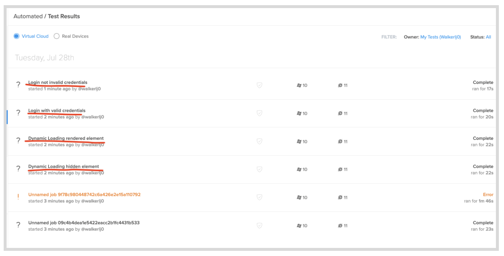
Add a Test Status
After adding a test name, we will add in an id and status for each unique test that you create. First, you will need to update our build method in the DriverFactory.jsto grab the session ID from Selenium.
//filename lib/DriverFactory.js
//...
async build(testName) {
this.testName = testName
this.driver = await this._configure().build()
const { id_ } = await this.driver.getSession()
this.sessionId = id_
}
//...
In DriverFactory.js,in the quit()function, we are also going to add a parameter which will be passed to spec_helper.js when you call DriverFactory. Inside the {} brackets for the first ifstatement in the quit()function that reports the name, add an ifstatement to see if the test has passed. This will send the job result as testPased if it does pass, and if it does not pass, it will direct you to the app to check to see where it failed.
// filename: lib/DriverFactory.js
// ...
async quit(testPassed) {
if (this.config.host === 'saucelabs') {
this.driver.executeScript('sauce:job-name=' + this.testName)
this.driver.executeScript('sauce:job-result=' + testPassed)
if (!testPassed)
console.log(
'See a video of the run at https://saucelabs.com/tests/' +
this.sessionId
)
}
await this.driver.quit()
}
}
module.exports = DriverFactory
Add in to spec_helper.jscode that will check if the test has passed and pass the parameter so that we can tell Sauce labs that it has in fact passed.
afterEach(async function() {
const testPassed = this.currentTest.state === 'passed'
await driverFactory.quit(testPassed)
})
Now when you run npm test in terminal (if your test fails try source ~/.bash_profile), then check your Sauce Labs dashboard. On the left you should be able to see a status of passed with each test.
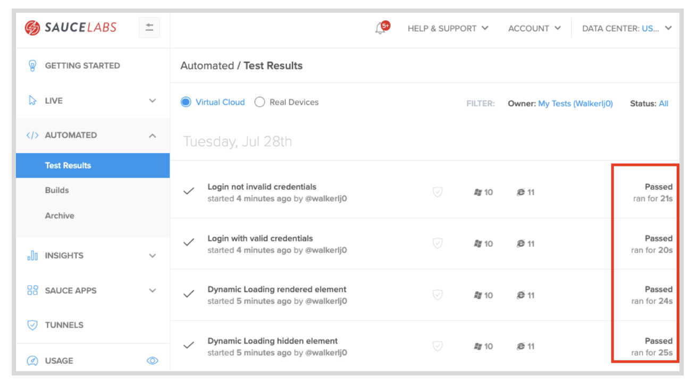
You can see an example of the completed code here.
Final Code
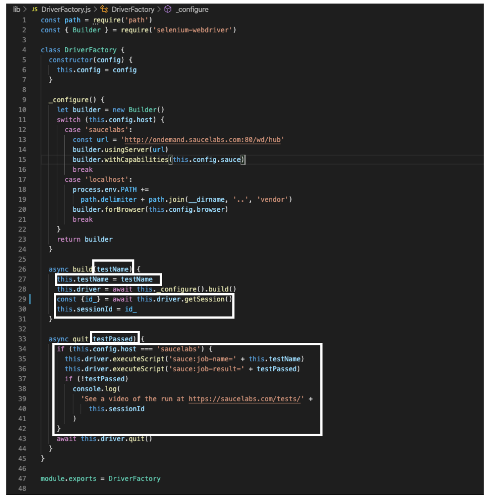
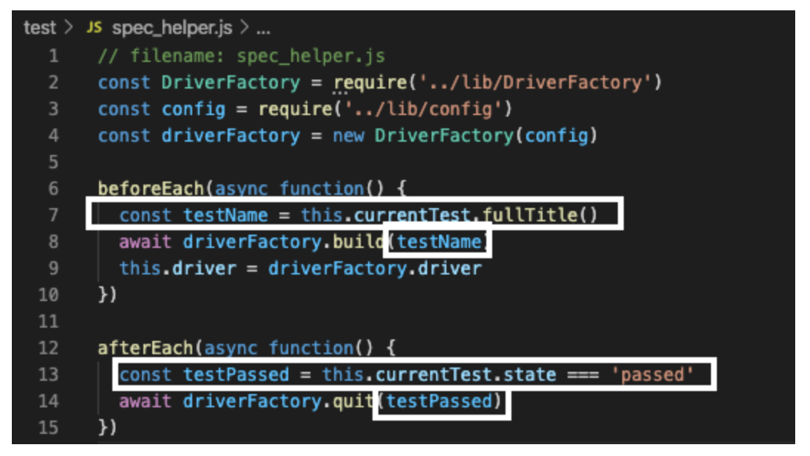
Quiz